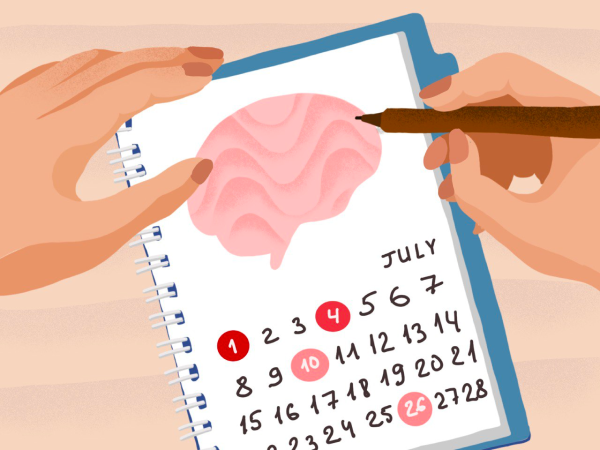

Information about your migraine will help
you and your doctor to treat your condition.
When starting your diary keep it as simple as possible
and record basic information. If your diary is simple —
the more likely you to keep it up.
Use your diary to record
every migraine or other headache you get. The most important
information for the diary is the following:
1. Date and time
Record the days and what time of day attack started. As well as the duration of the attack.
2. Pain severity
Record the severity of headache or other symptoms severity.
3. Symptoms
Track other symptoms you experience alongside the headache.
4. Medication
Note what medication you took and weather it help or not.
5. Possible triggers
Note relevant events that might cause your attack — what you were doing, what you ate or drank.
References:
- "Headache diary.", Stanford Health Care
- "The Migraine Brain: Your Breakthrough Guide to Fewer Headaches, Better Health". Carolyn Bernstein, M.D., and Elanie McArdle, 2010
- "Managing your Migraine.", Dr. Katy Munro. 2021